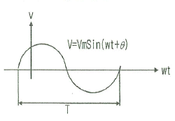
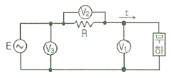
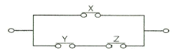
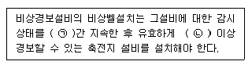

소방설비기사(전기분야) (2015-09-19 기출문제)
1과목: 소방원론
1. 할로겐화합물 소화약제의 구성 원소가 아닌 것은?
- 염소
- 브롬
- 네온
- 탄소
(정답률: 85%)

2. 제1인산암모늄이 주성분인 분말 소화약제는?
- 1종 분말소화약제
- 2종 분말소화약제
- 3종 분말소화약제
- 4종 분말소화약제
(정답률: 90%)
3. 다음 중 방염대상물품이 아닌 것은?
- 카펫
- 무대용 합판
- 창문에 설치하는 커튼
- 두께 2mm 미만인 종이벽지
(정답률: 87%)
4. 공기 중에서 연소상한값이 가장 큰 물질은?
- 아세틸렌
- 수소
- 가솔린
- 프로판
(정답률: 77%)
5. 제2류 위험물에 해당하지 않는 것은?
- 유황
- 황화린
- 적린
- 황린
(정답률: 84%)
6. 다음 물질 중 공기에서 위험도(H)가 가장 큰 것은?
- 에테르
- 수소
- 에틸렌
- 프로판
(정답률: 69%)
7. 고비점유 화재 시 무상주수하여 가연성 중기의 발생을 억제함으로써 기름의 연소성을 상실시키는 소화효과는?
- 억제효과
- 제거효과
- 유화효과
- 파괴효과
(정답률: 64%)
8. 건축물 화재에서 플래시 오버(Flash over) 현상이 일어나는 시기는?
- 초기에서 성장기로 넘어가는 시기
- 성장에서 최성기로 넘어가는 시기
- 최성기에서 감쇠기로 넘어가는 시기
- 감쇠기에서 종기로 넘어가는 시기
(정답률: 90%)
9. 다음 중 인화점이 가장 낮은 물질은?
- 경유
- 메틸알코올
- 이황화탄소
- 등유
(정답률: 74%)
10. 같은 원액으로 만들어진 포의 특성에 관한 설명으로 옳지 않은 것은?
- 발포배율이 커지면 환원시간은 짧아진다.
- 환원시간이 길면 내열성이 떨어진다.
- 유동성이 좋으면 내열성이 떨어진다.
- 발포배율이 작으면 유동성이 떨어진다.
(정답률: 55%)
11. 물리적 소화방법이 아닌 것은?
- 연쇄반응의 억제에 의한 방법
- 냉각에 의한 방법
- 공기와의 접촉 차단에 의한 방법
- 가연물 제거에 의한 방법
(정답률: 87%)
12. 갑종방화문의 을종방화문의 비차열 성능은 각각 얼마 이상 이어야 하는가?
- 갑종 : 90분, 을종 : 40분
- 갑종 : 60분, 을종 : 30분
- 갑종 : 45분, 을종 : 20분
- 갑종 : 30분, 을종 : 10분
(정답률: 92%)
13. 마그네슘의 화재에 주수하였을 때 물과 마그네슘의 반응으로 인하여 생성되는 가스는?
- 산소
- 수소
- 일산화탄소
- 이산화탄소
(정답률: 87%)
14. 비수용성 유류의 화재 시 물로 소화할 수 없는 이유는?
- 인화점이 변하기 때문
- 발화점이 변하기 때문
- 연소면이 확대되기 때문
- 수용성으로 변하여 인화점이 상승하기 때문
(정답률: 88%)
15. 가연물의 종류에 따른 화제의 분류방법 중 유류화재의 나타내는 것은?
- A급 화재
- B급 화재
- C급 화재
- D급 화재
(정답률: 91%)
16. 건물 내에서 화재가 발생하여 실내온도거 20℃에서 600℃까지 상승했다면 온도 상승만으로 건물의 내의 공기 부피는 처음의 약 몇 배 정도 팽창하는가? (단, 화재로 인한 압력의 변화는 없다고 가정한다.)
- 3
- 9
- 15
- 30
(정답률: 65%)
17. 화재의 일반적 특성이 아닌 것은?
- 확대성
- 정형성
- 우발성
- 불안정성
(정답률: 90%)
18. 화재에 대한 건축물의 손실정도에 따른 화재형태를 설명한 것으로 옳지 않은 것은?
- 부분소 화재란 전소화재, 반소화재에 해당하지 않는 것을 말한다.
- 반소화재란 건축물에 화재가 발생하여 건축물의 30%이상 70%미만 소실된 상태를 말한다.
- 전소화재란 건축물에 화재가 발생하여 건축물의 70%이상이 소실된 상태를 말한다.
- 훈소화재란 건축물에 화재가 발생하여 건물물의 10%이하가 소실된 상태를 말한다.
(정답률: 81%)
19. 위험물의 유별에 따른 대표적인 성질의 연결이 옳지 않은 것은?
- 제1류 : 산화성 고체
- 제2류 : 가연성 고체
- 제4류 : 인화성 액체
- 제5류 : 산화성 액체
(정답률: 86%)
20. 화재하중 계산 시 목재의 단위발열량은 약 몇 kcal/kg 인가?
- 3000
- 4500
- 9000
- 12000
(정답률: 71%)
2과목: 소방전기회로
21. 그림과 같은 정현파에서 v=Vmsin(wt+θ)의 주기 T로 옳은 것은?

- 4π/w
- 2π/w
- w2/2π
- 4πf2
(정답률: 72%)
22. 60Hz의 3상 전압을 전파정류하면 맥동주파수는?
- 120Hz
- 240Hz
- 360Hz
- 720Hz
(정답률: 81%)
23. i=Imsinwt인 정현파에서 순시값과 실효값이 같아지는 위상은 몇 도인가?
- 30°
- 45°
- 50°
- 60°
(정답률: 77%)
24. 제어요소의 구성으로 옳은 것은?
- 검출부와 비교부
- 조작부와 검출부
- 검출부와 조절부
- 조작부와 조절부
(정답률: 84%)
25. 그림과 같이 전압계 V1, V2, V3와 5Ω의 저항 R을 접속하였다. 전압계의 지시가 V1=20V, V2=40V, V3=50V 라면 부하전력은 몇 W인가?

- 50
- 100
- 150
- 200
(정답률: 69%)
26. 제어량에 따라 분류되어 자동제어로 옳은 것은?
- 정치(fixed value)제어
- 비율(ration)제어
- 프로세스(process)제어
- 시퀸스(sequence)제어
(정답률: 64%)
27. 온도보상장치에 사용되는 소자인 NCT형 서미스터의 저항값과 온도의 관계를 옳게 설명한 것은?
- 저항값은 온도에 비례한다.
- 저항값은 온도에 반비례한다.
- 저항값은 온도의 제곱에 비례한다.
- 저항값은 온도의 제곱에 반비례한다.
(정답률: 60%)
28. 반지름 1m 인 원형 코일에서 중심점에서의 자계의 세기가 1AT/m 라면 흐르는 전류는 몇 A 인가?
- 1
- 2
- 3
- 4
(정답률: 60%)
29. 조작량(manipulated varible)은 제어요소에서 무엇에 인가되는 양인가?
- 조작대상
- 제어대상
- 측정대상
- 입력대상
(정답률: 74%)
30. 전원을 넣자마자 곧바로 점등되는 형광등용의 안정기는?
- 글로우 스타트식
- 필라멘트 단락식
- 래피드 스타트식
- 점등관식
(정답률: 77%)
31. 다음 중 3상 유도전동기에 속하는 것은?
- 권선형 유동전동기
- 세이딩코일형 전동기
- 뷴상기동형 전동기
- 콘텐서기동형 전동기
(정답률: 76%)
32. 확산형 트랜지스터에 관한 설명으로 옳지 않은 것은?
- 불활성 가스 속에서 확산시킨다.
- 단일 확산형과 2중 확산형이다.
- 이미터, 베이스의 순으로 확산시킨다.
- 기체반도체가 용해하는 것보다 낮은 온도에서 불순불을 확산시킨다.
(정답률: 63%)
33. 전압변동율이 25%인 정류회로에서 무부하 전압이 24V인 경우 부하 전압은 몇 V인가?
- 19.2
- 20.3
- 21.6
- 22.6
(정답률: 48%)
34. 두 종류의 금속으로 폐회로를 만들어 전류를 흘리면 양 접속점에서 한 쪽은 온도가 올라가고 다른 쪽은 온도가 내려가는 현상은?
- 펠티에 효과
- 제벡 효과
- 톰슨 효과
- 홀 효과
(정답률: 66%)
35. 다음중 직류전동기의 제동법이 아닌 것은?
- 회생제동
- 정상제동
- 발전제동
- 역전제동
(정답률: 72%)
36. A급 싱글 전력증폭기에 관한 설명으로 옳지 않은 것은?
- 바이어스점은 부하선이 거의 가운데인 중앙점에 취한다.
- 회로의 구성이 매우 복잡하다.
- 출력용의 트랜지스터가 1개이다.
- 찌그러짐이 적다.
(정답률: 73%)
37. 전류계의 오차율 ±2%, 전압게의 오차율 ±1%인 계기로 저항을 측정하면 저항의 오차율은 몇 %인가?
- ±0.5%
- ±1%
- ±3%
- ±7%
(정답률: 67%)
38. 다음 그림을 논리식으로 표현한 것은?

- X(Y+Z)
- XYZ
- XY+ZY
- (X+Y)(X+Z)
(정답률: 63%)
39. 전기화재의 원인이 되는 누전전류를 검출하기 위해 사용되는 것은?
- 접기계전기
- 영상변류기
- 계기용변압기
- 과전류계전기
(정답률: 81%)
40. 지멘스(siemens)는 무엇의 단위인가?
- 비저항
- 도전률
- 컨덕턴스
- 자속
(정답률: 79%)
3과목: 소방관계법규
41. 소방시설공사업의 상호ㆍ영업소 소재지가 변경된 경우 제출하여야 하는 서류는?
- 소방기술인력의 자격증 및 자격수첩
- 소방시설업 등록증 및 등록수첩
- 법인등기부등본 및 소방기술인력 연명부
- 사업자등록증 및 소방기술인력의 자격증
(정답률: 72%)
42. 소방기술자의 자격의 정지 및 취소에 관한 기준 중 1차 행정처분기준이 자격정지 1년 해당 되는 경우는?
- 자격수첩을 다른 자에게 빌려준 경우
- 동시에 둘 이상의 업체에 취업한 경우
- 거짓이나 그 밖의 부정한 방법으로 자격수첩을 발급받은 경우
- 업무수행 중 해당 자격과 관련하여 중대한 과실로 다른 자에게 손해를 입히고 형의 선고를 받은 경우
(정답률: 62%)
43. 소방본부장 또는 소장서장이 원활한 소방 활동을 위하여 행하는 지리 조사의 내용에 속하지 않은 것은?
- 소방대상물에 인접한 도로의 폭
- 소방대상물에 인접한 도로의 교통상황
- 소방대상물에 인접한 도로주변의 토지의 고저
- 소방대상물에 인접한 지역에 대한 유동인원의 현황
(정답률: 76%)
44. 소방시설 중 연결살수설비는 어떤 설비에 속하는가?
- 소화설비
- 구조설비
- 피난설비
- 소화활동설비
(정답률: 78%)
45. 소방시설관리업 등록의 결격사유에 해당되지 않은 것은?
- 금치산자
- 한정치산자
- 소방시설관리업의 등록의 취소된 날로 부터 2년이 지난자
- 금고 이상의 형의 집행유예를 선고 받고 그 유예기간 중에 있는자
(정답률: 85%)
46. 제4류 위험물 제조소의 경우 사용전압이 22kV인 특고압 가공전선이 지니갈 때 제조소의 외벽과 가공전선 사이의 수평거리(안전거리)는 몇 m 이상이어야 하는가?
- 2
- 3
- 5
- 10
(정답률: 48%)
47. 일반음식점에서 조리를 위해 불을 사용하는 설비를 설치할 때 지켜야 할 사항의 기준으로 옳지 않은 것은?
- 주방시설에는 동물 또는 식물의 기름을 제거할 수 있는 필터 등을 설치할 것
- 열을 발생하는 조리기구는 반자 또는 선반에서 50cm 이상 떨어지게 할 것
- 주방시설에 부속된 배기덕트는 0.5mm 이상의 아연도금겅펀 또는 이와 동등 이상의 내식성 불연재료로 설치할 것
- 열을 발생하는 조리기구로 부터 15cm 이내의 거리에 있는 가연성 주요구조부터는 석면판 또는 단열성이 있는 불연재료로 덮어 씌울 것
(정답률: 57%)
48. 다음 중 위험물의 성질이 자기반응성 물질에 속하지 않은 것은?
- 유기과산화물
- 무기과산화물
- 히드라진 유도체
- 니트로화합물
(정답률: 62%)
49. 지정수량의 몇 배 이상의 위험물을 취급하는 제조소에는 화재예방을 윈한 예방규정을 정하여야 하는가?
- 10배
- 20배
- 30배
- 50배
(정답률: 78%)
50. 소방기본법상 화재의 예방조치 명령이 아닌 것은?
- 불장난ㆍ모닥불ㆍ흡연 및 화기 취급의 금지 또는 제한
- 타고남은 불 또는 화기의 우려가 있는 재의 처리
- 함부로 버려두거나 그냥 둔 위험물, 그 밖에 탈 수 있는 물건을 옮기거나 치우게 하는 등의 조치
- 불이 번지는 것을 막기 위하여 불이 번질 우려가 있는 소방대상물의 사용 제한
(정답률: 67%)
51. 방염성능기준 이상의 실내장식물 등을 설치하여야 하는 특정소방대상물에 해당하지 않은 것은?
- 숙박시설
- 노유자시설
- 층수가 11층 이상의 아파트
- 건축물의 옥내에 있는 종교시설
(정답률: 78%)
52. 특정소방대상물의 관계인이 피난시설 또는 방화시설의 폐쇄ㆍ훼손ㆍ변경 등의 행위를 했을 때 과태료 처분으로 옳은 것은?(관련규정 개정으로 정답이 바뀌었습니다. 시험 출제당시 기존 정답은 2번이었습니다. 여기서는 2번을 누르면 정답 처리 됩니다. 자세한 내용은 해설을 참고하세요.)
- 100만원 이하
- 200만원 이하
- 300만원 이하
- 500만원 이하
(정답률: 70%)
53. 소방시설공사업법상 소방시설공사에 관한 발주자의 권한을 대행하여 소방시설공사가 설계도서 및 관계 법령에 따라 적법하게 시공되는지 여부의 확인과 품질ㆍ시공 관리에 대한 기술지도를 수행하는 영업은 무엇인가?
- 소방시설유지업
- 소징시설설계업
- 소방시설공사업
- 소방공사감리업
(정답률: 85%)
54. 소방기존법상 5년 이하의 징역 또는 3천만원 이하의 벌금에 해당하는 위반사항이 아닌 것은?(관련 규정 개정전 문제로 여기서는 기존 정답인 3번을 누르면 정답 처리됩니다. 자세한 내용은 해설을 참고하세요.)
- 정당한 사유 없이 소방용수시설을 사용하거나 소방용수시설의 효용을 해하거나 그 정당한 사용을 방해한 자
- 화재현장에서 사람을 구출하는 일 또는 불을 끄거나 불이 번지지 아니하도록 하는 일을 방해한 자
- 불이 번질 우려가 있는 소방대상물 및 토지를 일시적으로 사용하거나 그 사용의 제한 또는 소방활동에 필요한 처분을 방해한 자
- 화재 진압을 위하여 출동하는 소방자동차의 출동을 방해한 자
(정답률: 76%)
55. 형식승인대상 소방용품에 해당하지 않은 것은?
- 관창
- 안전매트
- 피난사다리
- 가스누설경보기
(정답률: 53%)
56. 소방기본법상 화재경계지구에 대한 소방특별조사권자는 누구인가?
- 시ㆍ도지사
- 소방본부장ㆍ소방서장
- 한국소방안전협회장
- 국민안전처장관
(정답률: 68%)
57. 다음 중 특수가연물에 해당 하지 않는 것은?
- 사류 1000kg
- 면화류 200kg
- 나무껍질 및 대팻밥 400kg
- 넝마 및 종이부스러기 500kg
(정답률: 79%)
58. 점포에서 위험물을 용기에 담아 판매하기 위하여 위험물을 취급하는 판매취급소는 위험물안전관리법상 지정수량의 몇 배 이하의 위험물까지 취급할 수 있는가?
- 지정수량의 5배 이하
- 지정수량의 10배 이하
- 지정수량의 20배 이하
- 지정수량의 40배이하
(정답률: 48%)
59. 소방안전관리자가 작성하는 소방계획서의 내용에 포함되지 않는 것은?
- 소방시설공사 하자의 판단기준에 관한 사항
- 소방시설ㆍ피난시설 및 방화시설의 점검ㆍ정비계획
- 공동 및 분임 소방안전관리에 관한사항
- 소화 및 연소 방지에 관한 사항
(정답률: 77%)
60. 소방시설 중 화재를 진압하거나 인명구조활동을 위하여 사용하는 설비로 정의되는 것은?
- 소화활동설비
- 피난설비
- 소화용수설비
- 소화설비
(정답률: 80%)
4과목: 소방전기시설의 구조 및 원리
61. 다음 비상전원 및 배터리 중 최소용량이 가장 큰 것은?
- 지하층을 제외한 11층 미만의 유도등 비상전원
- 비상조명등의 비상전원
- 휴대용지상조명등의 충전식 배터리용량
- 무선통신보조설비 증폭기의 비상전원
(정답률: 67%)
62. 비상경보설비함 상부에 설치하는 발신기 위치표시등의 불빛은 부착지점으로부터 몇 m이내 떨어진 위치에서 쉽게 식별할 수 있어야 하는가?
- 5
- 10
- 15
- 20
(정답률: 52%)
63. P형 1급 발신기에 연결해야 하는 회선은?
- 지구선, 공통선, 소화선, 전화선
- 지구선, 공통선, 응답선, 전화선
- 지구선, 공통선, 발신기선, 응답선
- 신호선, 공통선, 발신기선, 응답선
(정답률: 69%)
64. 자동화재속보설비 속보기의 예비전원에 대한 안전장치시험을 할 경우 1/5C이상 1C이하의 전류로 역충전하는 경우 안전장치가 작동해야 하는 시간의 기준은?(오류 신고가 접수된 문제입니다. 반드시 정답과 해설을 확인하시기 바랍니다.)
- 1시간 이내
- 2시간 이내
- 3시간 이내
- 5시간이내
(정답률: 55%)
65. 누전경보기의 기능검사 항목이 아닌 것은?
- 단락전압시험
- 절연저항시험
- 온도특성시험
- 단락전류강도시험
(정답률: 42%)
66. 휴대용비상조명등의 설치기준으로 옳지 않은 것은?
- 숙박시설 또는 다중이용업소에는 객실 또는 영업장 안의 구획된 실마자 잘 보이는 곳에 1개 이상 설치
- 대규모점포에는 보행거리 30m이내 마다 2개이상 설치
- 영화상영관에는 보행거리 50m이내 마다 3개이상 설치
- 지하역사에는 보행거리 25m이내 마다 3개 이상 설치
(정답률: 74%)
67. 소방회로용으로 수전설비, 변전설비, 그 밖의 기기 및 배선을 금속제 외함에 수납한 것은?
- 전용분전반
- 공용분전반
- 전용큐비클식
- 공용큐비클식
(정답률: 69%)
68. 비상콘센트설비의 전원공급회로의 설치기준으로 옳지 않은 것은?
- 전원회로는 단상 교류 220V인 것으로 한다.
- 전원회로의 공급용량은 1.5kVA 이상의 것으로 한다.
- 전원회로는 주배전반에서 전용회로로 한다.
- 하나의 전용회로에 설치하는 비상콘센트는 10개 이상으로 한다.
(정답률: 72%)
69. 비상방송설비의 설치기준으로 옳지않은 것은?
- 음량조정기의 배선은 3선식으로 할 것
- 확성기 음성입력은 5W 이상일 것
- 다른 전기회로에 따라 유도장애가 생기지 아니하도록 할 것
- 조작스위치는 바닥으로부터 0.8m 이상 1.5m이하의 높이에 설치할 것
(정답률: 84%)
70. 자동화재탐지설비에 있어서 지하구의 경우 하나의 경계구역의 길이는?
- 700m 이하
- 800m 이하
- 900m 이하
- 1000m 이하
(정답률: 72%)
71. 무선통신보조설비의 누설동축케이블 및 공중선은 고압의 전로로부터 몇 m 이상 떨어진 위치에 설치해야 하는가?
- 1.5
- 4.0
- 100
- 300
(정답률: 69%)
72. 무선통신보조설비에 사용되는 용어의 설명이 틀린 것은?
- 분파기 : 임피던스 매칭과 신호 균등분배를 위해 사용하는 장치
- 혼합기 : 두 개 이상의 입력신호를 원하는 비율로 조합한 출력이 발생하도록 하는 장치
- 증폭기 : 신호 전송 시 신호가 약해져 수신이 불가능해지는 것을 방지하기 위해서 증폭하는 장치
- 누설동축케이블 : 동축케이블의 외부도체에 가느다란 홈을 만들어서 전파기 외부로 새어나갈 수 있도록 한 케이블
(정답률: 74%)
73. 누전경보기의 수신부는 그 정격전압에서 최소 몇 회의 누전작동 반복시험을 실시하는 경우 구보 및 기능에 이상이 생기지 않아야 하는가?
- 1만회
- 2만회
- 3만회
- 5만회
(정답률: 77%)
74. 자동화재탐지설비의 발신기는 건축물의 각 부분으로부터 하나의 발신기까지 수평거리는 최대 몇 m 이하인가?
- 25m
- 50m
- 100m
- 150m
(정답률: 74%)
75. 피난기구의 설치기준으로 옳지 않은 것은?
- 숙박시설ㆍ노유자시설 및 의료시설은 그 층의 바닥면적 500m2 마다 1개 이상 설치
- 계단실형 아파트이 경우는 각 층마다 1개 이상 설치
- 복합용도의 층은 그 층의 바닥면적 800m2 머더 1개 이상 설치
- 주택법 시행령 제48조으 따른 아파트의 경우 하나의 관리주체가 관리하는 아파트 구역마다 공기안전매트 1개 이상 설치
(정답률: 53%)
76. 열전대식 감지기의 구성요소가 아닌 것은?
- 열전대
- 미터릴레이
- 접속전선
- 공기관
(정답률: 63%)
77. 누전경보기의전원은 분전반으로부터 전용회로로 하고 각 극에는 최대 몇 A 이하의 과전류 차단기를 설치해야 하는가?
- 5
- 15
- 25
- 35
(정답률: 80%)
78. 부착높이가 15m 이상 20m미만에 적응성이 있는 감지기가 아닌 것은?
- 이온화식 1종 감지기
- 연기복합형감지기
- 불꽃감지기
- 차동식분포형감지기
(정답률: 67%)
79. 비상콘센트 풀 박스 등의 두께의 최소 몇 mm이상의 철판을 사용하여야 하는가?
- 1.2mm
- 1.5mm
- 1.6mm
- 20.mm
(정답률: 80%)
80. 다음 ( ㉠ ), ( ㉡ )에 들어갈 내용으로 옳은 것은?

- ㉠ 30분, ㉡ 30분
- ㉠ 30분, ㉡ 10분
- ㉠ 60분, ㉡ 60분
- ㉠ 60분, ㉡10분
(정답률: 86%)